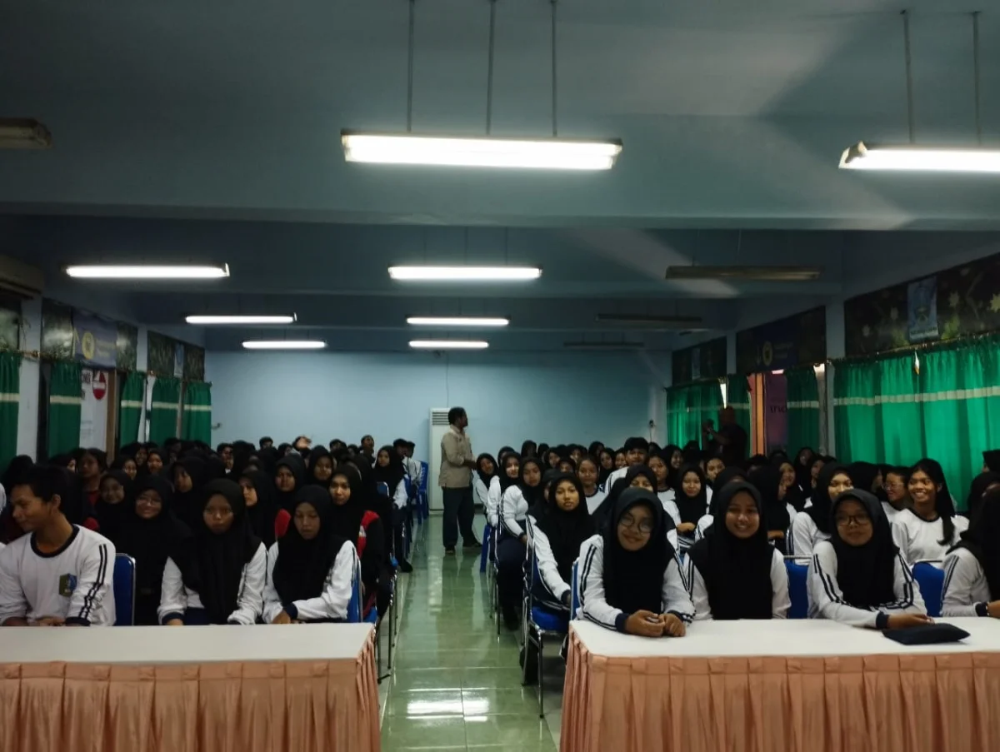

Pemilu OSIS & Demokrasi Pelajar
Program demokrasi pelajar melalui simulasi pemilihan Ketua OSIS yang dikemas serius dan dipublikasikan di media massa Jawa Pos Radar Kediri—mencetak generasi demokratis sejak sekolah.

Pendidikan Politik Lewat Pemilu OSIS
Pemilihan Ketua Organisasi Siswa Intra Sekolah (OSIS) seringkali hanya menjadi rutinitas tahunan biasa. Namun, melalui program Election Chairman of the Student Organization, Radar Kediri Institute mengajak sekolah untuk menaikkan level kegiatan ini menjadi simulasi demokrasi yang nyata, serius, dan sarat akan nilai edukasi politik bagi generasi muda.
Program ini dirancang sangat selaras dengan penerapan Kurikulum Merdeka, khususnya pada Proyek Penguatan Profil Pelajar Pancasila (P5) dengan tema Suara Demokrasi. Peserta didik akan belajar tahapan pemilu secara terstruktur: mulai dari pembentukan panitia (KPU Sekolah), kampanye damai, debat kandidat penyampaian visi misi, hingga proses pemungutan suara secara langsung, umum, bebas, dan rahasia.
Sebagai nilai tambah eksklusif, seluruh kemeriahan dan nilai positif dari penyelenggaraan Pemilu OSIS ini akan diliput dan dipublikasikan secara meluas di jaringan media massa Jawa Pos Radar Kediri. Hal ini tidak hanya memotivasi siswa, tetapi juga mendongkrak citra sekolah di mata masyarakat luas sebagai institusi yang progresif dalam mencetak calon pemimpin bangsa.
Keunggulan & Manfaat Program
- Memenuhi jam pelajaran proyek P5 (Suara Demokrasi) secara aplikatif dan menyenangkan
- Mendidik siswa tentang pentingnya partisipasi politik, public speaking, dan cara berdebat sehat
- Mencetak reputasi sekolah yang unggul karena dipublikasikan di media Jawa Pos Radar Kediri
- Memastikan anggaran promosi sekolah jauh lebih akuntabel dan efektif melalui media terverifikasi Dewan Pers [file:2]
- Membangun rasa kebanggaan pada diri pengurus OSIS terpilih maupun seluruh civitas akademika
Siklus & Pendampingan Kegiatan (Dapat disesuaikan dengan agenda sekolah)
Sosialisasi & Penetapan Kandidat
Pembentukan komisi pemilihan sekolah, seleksi bakal calon, dan penetapan nomor urut pasangan calon
Masa Kampanye Damai
Penyampaian program kerja ke tiap kelas, pembuatan poster kreatif, dan kampanye digital di media sosial sekolah
Debat Kandidat Terbuka
Adu gagasan di hadapan seluruh siswa dan guru. (RK Institute dapat berperan sebagai panelis/moderator tamu)
Pesta Demokrasi (Pencoblosan)
Simulasi pemungutan suara di TPS (Tempat Pemungutan Suara) yang disiapkan di lapangan/aula sekolah
Liputan & Publikasi Media
Tim jurnalis Radar Kediri meliput keseruan acara, mewawancarai kepala sekolah & kandidat terpilih, untuk dipublikasikan di media cetak dan digital
Event Gallery
Potret semaraknya pendidikan politik di sekolah: menumbuhkan pemikiran kritis dan kedewasaan berdemokrasi melalui Pemilu OSIS.
{kind=link}
{kind=link}
{kind=link}
Divisi Publikasi & Event

Jawa Pos Radar Kediri
Media Partner Sekolah
Informasi liputan dan paket koran:
officialrkinstitute@gmail.com
+62 831-9800-2246
Tempat & Eksekusi
Kegiatan sepenuhnya dilaksanakan di lingkungan sekolah Anda, didesain layaknya Tempat Pemungutan Suara (TPS) pada pemilu tingkat nasional.
Lapangan / Aula Sekolah Masing-Masing
Sebagai wujud P5, sekolah bertindak sebagai penyelenggara penuh (tuan rumah). Tim Radar Kediri akan hadir pada saat momentum puncak (Debat Terbuka atau Hari Pencoblosan) untuk melakukan peliputan, wawancara, dan pengambilan gambar guna menunjang materi publikasi di media massa.
Dukungan Radar Kediri
- Liputan langsung oleh wartawan profesional
- Slot pemberitaan 1/2 Halaman atau 1 Halaman di Koran
- Pembuatan naskah rilis berstandar jurnalistik
- Penayangan di platform web dan media sosial JPRK
- Sertifikat apresiasi sekolah sadar demokrasi
Pertanyaan Sering Diajukan
Info lebih lanjut terkait program publikasi Pemilu OSIS dan Demokrasi Pelajar.